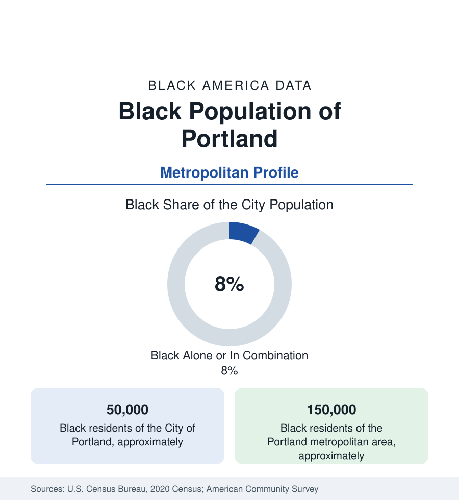

Black Cities
Black Portland: Albina's Shrinking Heart, the East Side's New Map
Portland holds about 50,000 Black residents in the city and 150,000 across the metro — a community displaced from its historic district to the city's edge. The census profile.

Portland holds about 50,000 Black residents within the city — Black alone or in combination, roughly 8 percent of its 650,000 people — and about 150,000 across the metropolitan area. The Oregon state profile gives the founding context: a state admitted with a Black exclusion clause, a community created in a generation by the wartime shipyards, and a historic district — Albina — whose Black population has been dispersing eastward for forty years under the region's appreciation. This article profiles the metro population at city scale.
Albina: The District That Was
Albina — the formerly separate city on the Willamette's east bank, annexed in the 1890s — became Black Portland when the Vanport flood of 1948 displaced the shipyard generation and the city's housing practices confined the survivors to its blocks. For three decades the Boise, Eliot, Humboldt, King, and Vernon neighborhoods formed a complete Black city within the city: Williams Avenue's clubs and businesses (the Cotton Club's Portland years, the jazz corridor), the churches, the Urban League, the Portland Observer (founded 1970, among the West's senior Black newspapers). The district's attrition came in the documented sequence of the era: the Memorial Coliseum and I-5 clearance at its southern edge, the Emanuel Hospital expansion's demolitions in the 1970s (for which the hospital system later formally apologized), disinvestment, then the appreciation wave from the 1990s that repriced the district for newcomers — until the census tracts that were overwhelmingly Black in 1970 recorded Black shares in the teens and single digits by the recent counts.
The Eastward Map
The population Albina held now lives east: the districts beyond 82nd Avenue (Hazelwood, Mill Park, Powellhurst-Gilbert — 'the Numbers' of local geography), where Black Portland's majority now resides in the postwar ranch subdivisions, and Gresham, the independent suburb at the metro's east edge, whose Black population is the metro's suburban center. North Portland's St. Johns and the peninsula hold a remnant layer; Beaverton and Hillsboro (the Silicon Forest) hold the tech corridor's professional increment; Vancouver, Washington — across the Columbia, in the Washington state file — holds the metro's northern Black suburbs. The displacement's social geography is the data's standing exhibit: the community's institutions (churches above all) now serve congregations that commute back to Albina from the east side on Sundays, a pattern the local literature calls the reverse pilgrimage.
Composition and Institutions
The metro's Black composition layers the shipyard descendants with one of the Pacific Northwest's significant East African communities (Portland is a resettlement site; its Somali, Ethiopian, and Eritrean populations center in the east-side corridors), Caribbean and West African increments, and California in-migration. Institutions run at a scale above the population's: the Observer and the Skanner (Portland's two Black newspapers, a distinction no city its size matches), the Urban League of Portland's statewide role, Portland Community College's Cascade campus in Albina's heart, the Black cultural institutions of the Alberta Arts District (the gentrification frontier's own corridor, where Black-owned galleries and the Last Thursday tradition negotiate the district's new economy), and a Black elected presence in city and county government ahead of the population share.
Indicators and Change
The indicators split along the displacement line: aggregate Black Portland medians (income, attainment through the metro's educated economy) sit mid-Pacific-pack, while the east-side tracts' data and the homeownership series tell the rootedness story — Black homeownership in Portland runs well below the city's rate, and the legacy-homeowner programs (the city's preference policy for displaced Albina families, among the nation's first municipal redress programs of its kind, whose applicant data are a profile within the profile) operate against the appreciation curve. The estimates show the metro Black population growing — the east side and Gresham gaining, the historic core's share continuing to fall — in the now-standard Pacific pattern this section records from Oakland to Seattle.
Reading the Portland Numbers
Portland is the displacement profile in its most documented American form: a community founded by a flood's survivors, cleared by a highway and a hospital, and repriced by a boom, now living at the metro's edge and commuting back to its churches. The 150,000 in the metro tables are Albina's people at metropolitan scale — and the district they left is the most argued-over twenty blocks in the Pacific Northwest's data.
More in Black Cities
Black Atlanta: Population, Distribution, and Growth of a Black Metropolis
Metro Atlanta holds more than two million Black residents — roughly one in three, second only to New York. The suburban distribution, migration history, and composition of Black Atlanta in the census data.
Black New York: The Largest Black Population in America
The New York metropolitan area holds about 3.4 million Black residents — more than any metro in the nation — and the city itself about two million. The census profile.
Black Washington: The District and the Metro
The Washington metro holds about 1.6 million Black residents, and the District itself — long a majority-Black city — now records a Black share near 41 percent. The census profile.
Source: U.S. Census Bureau, 2020 Census; American Community Survey; Population Estimates Program.